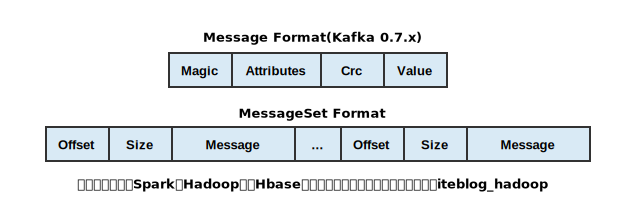
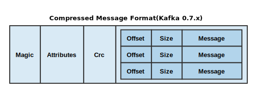
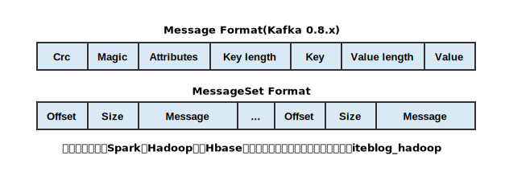
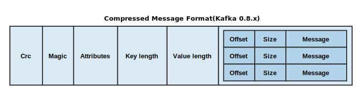
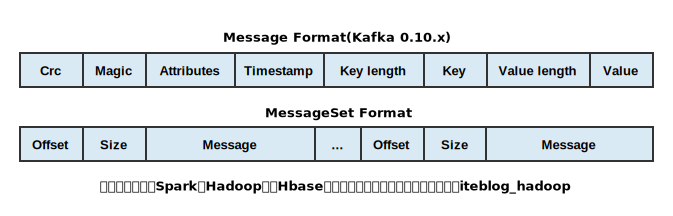

用 Kafka 这么久，从来都没去了解 Kafka 消息的格式。今天特意去网上搜索了以下，发现这方面的资料真少，很多资料都是官方文档的翻译；而且 Kafka 消息支持压缩，对于压缩消息的格式的介绍更少。基于此，本文将以图文模式介绍 Kafka 0.7.x、0.8.x 以及 0.10.x 等版本 Message 格式，因为 Kafka 0.9.x 版本的消息格式和 0.8.x 一样，我就不单独介绍了。
设计良好的消息格式应该很容易支持版本的升级以及新版本消息格式兼容老版本消息格式。而且 Kafka 各个大版本都增加了很多新功能，这些新功能的实现需要依赖于消息格式，只有深入理解了 Kafka的消息设计，我们才能更好地学习 Kafka 所提供的各种功能。现在我们就来看看 Kafka 消息格式是如何设计的。
Kafka 0.7.x 消息格式
这个版本消息的格式相对简单，具体如下：

从上面可以看出，Kafka 0.7.x 版本的消息格式比较简单，主要包括：
- magic：这个占用1个字节，主要用于标识 Kafka 版本。这个版本的 Kafka magic有 0 和 1 两个值，不过默认 Message 使用的是 1；
- attributes：占用1个字节，这里面存储了消息压缩使用的编码。这个版本的 Kafka 仅支持 gzip 和 snappy 两种压缩格式；后四位如果是0001则标识gzip压缩，如果是0010则是snappy压缩，如果是0000则表示没有使用压缩。
- crc：占用4个字节，主要用于校验消息的内容，也就是上图的Value。
- value：这个占用的字节为 N - 6，N为Message总字节数，6就是前面几个属性占用的字节和。value即是消息的真实内容，在 Kafka 中这个也叫做payload。
大家在上图还看到 MessageSet 的格式，一个 MessageSet 包含多条消息，其中：
- offset：占用8个字节，这个是 Kafka 消息存储到磁盘之后的物理偏移量；
- size：占用4个字节，这是消息的大小。
- message：占用N个字节，这个就是上图的Message，格式见Message Format。
需要注意的是， Kafka 从 Producer 发送到 Broker 是以 MessageSet 为单位发送的，而不是以 Message 发送的。而且压缩的时候也是以 MessageSet 进行压缩的，并不是只压缩一条消息，这样做的目的是提高效率。压缩之后的消息格式如下：

从上图可以看出，压缩之后的内容作为另外一条消息的内容进行存储，其中包含了多条消息。
Kafka 0.8.x (0.9.x) 消息格式
Kafka 0.7.x 的消息格式有以下几个缺点：
- 压缩消息的内部消息不可以通过偏移量进行寻址
- 对于压缩消息，消费者checkpoint 消息时只能对整个消息进行 checkpoint ，无法对压缩消息内部的消息进行checkpoint ，这使得我们只能实现At-least-once语义。
- 这种消息格式不适合log compaction
针对这些问题，Kafka 0.8.0 基于 Kafka 0.7.0 消息合适进行了改进，主要如下：

这个版本的 Message 格式加入了 Key 相关的信息，以及 内容的长度等，各个字段的含义介绍如下：
- crc：占用4个字节，主要用于校验消息的内容；
- magic：这个占用1个字节，主要用于标识 Kafka 版本。
- attributes：占用1个字节，这里面存储了消息压缩使用的编码。这个版本的 Kafka 仅支持 gzip、snappy 以及 lz4（0.8.2引入） 三种压缩格式；后四位如果是0001则标识gzip压缩，如果是0010则是snappy压缩，如果是0011则是snappy压缩，如果是0000则表示没有使用压缩。
- key length：占用4个字节。主要标识 Key 的内容的长度 K；
- key：占用 K 个字节。存储的是 key 的具体内容
- value length：占用4个字节。主要标识 value 的内容的长度 V；
- value：这个占用的字节为 V。value即是消息的真实内容，在 Kafka 中这个也叫做payload。
这个版本的MessageSet 格式和之前一样，就不介绍了。但是需要注意的是，这个版本 MessageSet 中的 offset 字段存储的已经不是消息物理偏移量了，而是逻辑地址，比如0,、1、2….。有了逻辑地址，我们就可以解决之前Kafka 0.7.0遇到的一些问题，比如可以在压缩消息内通过偏移量进行寻址，压缩消息可以checkpoint内部的消息等。
我们在上面说了 Kafka 压缩的时候是将整个 MessageSet 进行压缩的，压缩完之后的内容作为另外一个 Message 的 value，如下：

从上图看到，压缩消息的格式和非压缩格式的消息不一样，少了 Key 的存储空间，而且这时候消息的 value 为压缩之后的消息内容。
Kafka 0.10.x 消息格式
到了Kafka 0.10.x，其引入了 Kafka Stream，其依赖了消息的时间，所以这个版本的消息加入了时间戳属性，格式如下：

可以看出，这个版本相对于 Kafka 0.8.x版本的消息格式变化不大，各个字段的含义：
这个版本的 Message 格式加入了 Key 相关的信息，以及 内容的长度等，各个字段的含义介绍如下：
- crc：占用4个字节，主要用于校验消息的内容；
- magic：这个占用1个字节，主要用于标识 Kafka 版本。Kafka 0.10.x magic默认值为1
- attributes：占用1个字节，这里面存储了消息压缩使用的编码以及Timestamp类型。这个版本的 Kafka 仅支持 gzip、snappy 以及 lz4（0.8.2引入） 三种压缩格式；后四位如果是 0001 则表示 gzip 压缩，如果是 0010 则是 snappy 压缩，如果是 0011 则是 lz4 压缩，如果是0000则表示没有使用压缩。第4个bit位如果为0，代表使用create time；如果为1代表append time；其余位（第5~8位）保留；
- key length：占用4个字节。主要标识 Key 的内容的长度 K；
- key：占用 K 个字节。存储的是 key 的具体内容
- value length：占用4个字节。主要标识 value 的内容的长度 V；
- value：这个占用的字节为 V。value即是消息的真实内容，在 Kafka 中这个也叫做payload。
这个版本的压缩消息格式和 Kafka 0.8.x 类似，就不介绍了。
目前的 Kafka 最新版本为 0.11.x，这个版本相对于之前版本有了重大的改变，消息格式完全变了。由于其还在开发中，本文就不再介绍了，如果大家感兴趣，可以到官方文档进行阅读。